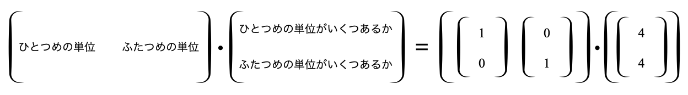

PDF版はこちら
本稿は，クリエイティブ・コモンズ【表示-非営利 4.0 国際】ライセンスに準拠します．
今回，行列とか線形代数とかいわれる分野に関して，自分なりに考えて腑に落ちた理解のしかたについて書き記しておきたい． まず最初に断っておくべきこととして，私は決して数学をちゃんと勉強した人間ではない，ということだ1． むしろ，高校や大学では数学は落ちこぼれで，何一つ楽しさがわからなかった． センター試験の数学は，自己採点で3割くらいしか取れてなかったし，大学の二次試験も，おそらく数学は0点だったのではないだろうか． そういうこともあって，大学時代が終わるまで私は数学が大嫌いだった． しかし，大学院時代にエイっと一念発起して数学を勉強し直し，その結果，数学の美しさみたいなものに触れることができたのだ．
今は，ありがたいことに数学が好きになり，数学の世界から産み落とされた数々の成果を，(その初歩的な部分のほんのカケラだけだが，)自分の研究やラボメンバーとの議論に使えるようになれた(気がする)． その“数学の美しさ”に触れる機会をくれたのが行列だった． だから，私の尊敬するDPZライターである加藤まさゆきさんが，行列わかんねーというブログを書いていらっしゃることに，うかうか反応してしまったのである．
何より自分が脱落してるなあと感じさせられたのは「行列」が1ミリたりとも理解できなかったことである。
カッコの中に4つ数字が並んでいて、それをなんか特殊な方法で足し算したり掛け算したりする不気味な分野である。
この数字の並びや規則がこの世界の何を表現しようとしているのか、さっぱり掴むことができなかったからである。
“行列のできない高校物理教員(まさゆき研究所)/加藤まさゆき” より引用
私も行列が特に意味不明だった人間なので，この感覚はとても共感する． 足し算はまだしも，“掛け算”はなんでこんな奇怪な操作をさせられるんだ? こういう複雑な掛け算で，結局何が表現されてるんだ? と，加藤さんと同じことが気になって，何一つ理解する気になれなかった． とはいえ，そんな私でもなんとかかんとか，ゆっくりやれば行列が表現しようとする世界を理解できたのだ． だからこそ，このブログの後半で語られる，“加藤さんの友人”が説明する行列への納得のしかたに対して，忸怩たるモノを感じたのだ;
行列は何も表してはいない。ただの計算様式だ。
“行列のできない高校物理教員(まさゆき研究所)/加藤まさゆき” より引用
違う!!! これは，たとえ方便だとしても，嘘を言っている． “行列の不気味な掛け算”は，決してただの計算様式じゃない． 行列は，掛け算をあんなふうに計算することで，実はとんでもないことを表現しているのだ．
それだけじゃない，“行列の掛け算”について考えていくことで見えてくる様々な“不思議”にこそ，数学の面白さが存在している． 私は，行列の掛け算をじっと見つめることで数学の美しい世界へと足を踏み入れるキッカケを手に入れた． 本稿では，行列の奇怪な側面を通して，数学者の営みの偉大さに対して素人ながらに言及したい． 願わくば，これが，加藤さんのように行列わからんチンとなってる人々へ，ほんの少しでも助けとなり，そして数学への興味のキッカケとなりますよう．
行列は，本当に意味不明なことしかない． 本当は，行列式だの基底だの固有値だのと，(実は初歩的な)専門用語を使って意味不明度合いをブーストしてもいいのだが，まずは以下の入門してすぐに訳わかんなくなる部分に集中しよう．
少なくとも，私が高校生だったり大学生だったりした頃，この2つが特に意味不明だった．
少しだけ解説させてほしい． 行列とは，“なんか数とかを縦横に並べたもの”である． 横方向のラインを“行”と読んで，縦方向のラインを“列”と呼ぶ． 行列が複数あると，ふだん使っている数字のように計算することが可能だ． たとえば足し算． ほうほう，なんか同じ位置にある数字を足すのね…
足し算ができるってことは引き算もできるね． うむうむ，納得だ． よし，じゃあ2つの行列の掛け算をしよう3． !?!?!?!?!?!?!? え，こうじゃないの!?!?!?
このあたりで，当時の私はノックアウトだ． リングにタオルが投げ入れられて，私は白い灰になったり千の風になったりする． これを読んでる数学嫌いのみんなもそうだろう．
オーケーオーケー，少し冷静になろう． 何に対してそんなに混乱しているのかね，チミたちは． なに? “行列の掛け算のやり方はふだん使っている数字の掛け算のやり方みたいじゃない”だって?? うーん，じゃあそもそもチミたちが言うところの“ふだん使っている数字”とやらから始める必要があるかもしれない．
まず，言葉の整理をしよう． ふだん使っている数字，たとえばとかとかとかとかとかとか，円周率も入れてもいいし，なんなら虚数単位もOK. ひとまず，“ふだん計算に使う数字”のことを，いったん“スカラー”と名付けることにしよう． スカラーの足し算はどんな感じだったかというと， だとか， だとかいう方法で計算する．
引き算も似たような感じだ． だとか だとか．
じゃあ掛け算に移ろう． ふむ，まあ当然だね． なんの疑問もない．
私が線形代数を勉強し直した時，なぜスカラーの掛け算はこんなふうなのに，行列の掛け算は“スカラーとは違うやり方”なんだろうと考えた． そんなふうに考えて，じっとスカラーの掛け算と行列の掛け算を眺めていた． あのとき，私に2つの天啓が降りたのだ4．
当時，私は直感的に，この 2つの閃きが行列を理解するヒントになると(なぜだか)分かったのだ． みなさんにもその追体験をしていただくべく，
準備はいいか? 少し難しく感じたとしても大丈夫だ，ときには自分の手でちゃんと計算すれば，必ず分かる．
閃きその一をもう一度おさらいしよう: “なんか計算って両辺で不公平じゃね?”というやつだ． どういう意味かを言いたいから，スカラーの掛け算を見てみよう． 私が抱いた閃きとは，つまりこういうことだ “左辺()には，の記号があるのに，右辺()には無い!! 不公平だ!”
なんとなく，みなさんは“別に不公平じゃなくね?”と思ってるだろうことが伝わってくる． よーしよし，オーケーオーケー，よーく分かった落ち着くんだ，ほら，大丈夫大丈夫． まずは一旦，飲み込んでくれ． 私は当時，確かに“不公平だ”と思ったんだ． 不平を垂れ流すより，一緒に考えてくれ．
どうしたら公平になる? そうだね，右辺にも“”記号をいれればいいんだ． どうしたら，式に矛盾を生じさせずに，右辺にも“”記号を加えられるだろうか． こうだ．
さて，両辺が公平になったところで，この等式の意味するところを考えよう． この等式はつまり，こういう事が言いたい5．
“2を3回ぶん足したものは，1を6回ぶん足したものと同じ”
少しSFチックにいってみようか． 我々(そう，いまこれを読んでいる君のことだ)の存在している世界線では，“”を単位にしているだろう．
“シロアリが頭”とは，つまり“シロアリ単位が頭ぶん”ということだ(Fig. 41)6．
ここでパラレルワールドを想像してみよう(Fig. 42)． 便宜上，いま説明した世界線をA世界線，次に説明する世界線をB世界線と呼ぶ． B世界線はA世界線 と重なりあって存在するのだが，驚くべきことに，B世界線では“”を単位にものを考えるのだ．
だから，B世界線の人々は，さっきの画像(Fig. 41)をこんなふうに言う．
“シロアリが3頭”
と．
彼らは，単位を基準にすべてのモノを考えるので，上の画像は，彼らにとって，まぎれもなく“(単位の)シロアリが頭”の画像だ． ここで，この2つの並行世界を俯瞰できる神様は言う． “B世界線にとってこの画像はシロアリ2単位が3つ分，A世界線にとってこの画像はシロアリ1単位が6つ分，この2つの世界線での表現は違うけれど，これらは同じものなのね”，と(Fig. 43)．
よし，ここで数式に舞い戻ろう． 掛け算は，つまり平行世界線の繋がりを示した数式なのだ． この数式は，左辺 ，すなわち“を単位に考える世界での単位ぶん”と，右辺 ，すなわち“を単位に考える世界での単位ぶん”は，世界線は異なるけど同じもの()だ，ということを主張しているのだ!!
なんとなく言わんとすることは分かっていただけているだろうか． 実は，数式では，イコール記号()が出てくるたびに異なる世界線へと渡っているのだ． この視点でみてみると，ふだん使っている数式ですら，少し神秘的に見えてこないだろうか．
さきほど我々は，閃きその一を通して，“掛け算 = パラレルワールド”という視点を手に入れた(Fig. 51)．
さて，ここで少し話がズレるのだが，基礎科学というものについて少しお話したい． これはとても大事なことなのだけれど，基礎科学の世界で行われているものは，どんな領域であったとしても，“普遍的・抽象的・一般的な法則”を探し求める営みだ． 数学は特にそのケが強く，なんでもかんでも抽象化して，共通する法則を見出そうとする．
たとえばさっきの図，Fig. 51． これは，A世界線とB世界線を1次元の“直線”で表している． “これ，もっと一般化して，多次元にしたらどうなるんだろう”ってことを，基礎科学の徒は考えてしまうのである． たとえば，我々が生きている世界は，なんだかタテ・ヨコ・高さがあって，妙な立体感のある三次元世界だ． こういう，3次元の世界線どうしでも，これまで見てきたような“掛け算 = パラレルワールド”の視点が通用するのだろうか．
これが，閃きその二: “もしかして，見え方が違うだけで，実はスカラーと行列の掛け算は同じなのでは??”で言いたかったことだ． 3次元だとややこしいから，2次元の世界線で“掛け算 = パラレルワールド”の視点を使えないか試行錯誤してみよう．
さっきまでの直線の世界を2次元にするために，直線を2本にしてみよう(Fig. 52)．
おお，座標ができた． よし，では座標の上に点を置いてみよう(Fig. 53)． 点の座標は，だ． せっかくの2次元なんだから，もう一個点を置こうか． 点の座標は，だ．
ここで例の単位の話を考えてみよう． いま，我々の世界線での単位は，相変わらず“”なはずだ． 点は，軸に関して単位がつぶんの場所()にあって，軸に関しても単位がつぶんの場所()の位置にある． 点も同様に，軸に関して単位がつぶんの場所()で，軸に関して単位がつぶんの場所()の位置にあるといえる．
なんか軸に関して，とか軸に関して，とかいうのが面倒だ． “単位”も2次元に拡張した言い方にしてみよう．
すこし天下り的に“単位”を拡張するが，“軸に関して単位がつぶん”というのは，“を単位としてつぶん”と言い換えられそうだ(Fig. 54)． よしよし，じゃあ“軸に関して単位がつぶん”というのも，“を単位としてつぶん”と言い換えられるね．
この言い方で，もう一度，点と点について表現しよう． 点は，を単位としてつぶん，を単位としてつぶんの位置にある． 点は，を単位としてつぶん，を単位としてつぶんの位置にある．
いいねいいね，じゃあここで，さっき“”のことを“”と言い直したように，点を，“ホニャララ ”と言い直してみよう! … どうやって?
さてさて，ここでようやく行列の記法が登場する． ここだけは，そういうものだと思って諦めてほしいんだけれど7，“ホニャララ ”を表現するために，こんなふうに書くことにしよう．
これはつまり，

を表現している．
なんか，すくなくとも左側のは行列ぽい，というか行列だ． そして右側のも，なぜか向きが縦向きになっちゃってるけど，点の座標をうまく表現できている気がする． せっかくなので，点についても右側に加えちゃおう． おー，これで左側も右側も両方“行列”になった．
さて，これは，スカラーで言うところの“”，すなわち“単位が~~ぶん”を表現している，といった． つまり，が“単位”のことで，が“~~ぶん”の代わりだ．
よし，これでパラレルワールドへ向かう準備ができた． 我々の世界線を相変わらずA世界線と呼ぶことにしよう． そして，W世界線での点のことを，特別にと呼ぶことにしよう． たとえば，A世界線の点はみたいなことだ． まず，軸はA世界線と同じだけれども，軸をA世界線よりも倍の単位で考える世界線(B世界線)について考えてみよう(Fig. 55)．
このB世界線での点と点は，神様視点からみると，点と点と同じだということに気をつけてほしい． 必要ならば，Fig. 54とFig. 55とを見比べて，異なる世界線でも点の位置が同じことを確認しよう． A世界線でいうところの点は，B世界線においては軸に関して単位を基準に考えるので，点と表現するはずだ． もうすこし丁寧にいうと，点は，を単位としてつぶん，を単位としてつぶんの位置にある，という言い方になるかな． 点にもこの表現を適用すると，をつぶん，をつぶんだから，B世界線では点と表現するはずだ． これを，さっき使った“行列ぽい記法”で表現するとこうなる．
ほうほうほうほう． よし，この2つのパラレルワールドをイコールで繋げよう!
おー! なんか行列の等式ができたね． これは2つの世界線を俯瞰できる神様視点からすると正しい等式だ． だから，計算方法とかはいったん置いといて，“この数式は矛盾がなく正しい”ということにしよう．
さて，じゃあ次にもう少し複雑な世界(C世界線)を覗いてみよう． この世界線は単位がゆがんでいて，“我々の世界でいうところの”とを単位として考える世界だ(Fig. 56)．
これも，Fig. 54とFig. 56を見比べて，点は同じだけど，単位が異なることを確認してほしい． よし，じゃあ，C世界線では，点と点はどう表現できるかな．
ほうほう，なるほど，C世界線では， 点は，を単位としてつぶん，を単位としてつぶんの位置にある． 点は，を単位としてつぶん，を単位としての位置にある． といえそうだ．
こちらも行列的な表現をすると，こう書ける．
よっしゃ!例によってパラレルワールドをつなげるぞ!
ついでにB世界線もいれちゃおう!
これも，計算方法は置いとくとして，正しい数式ということにしよう．
さて，今回はA世界線から始まってC世界線の点について考えていたから良かったものの，ときには，どうすればC世界線の点をA世界線で見たかのように表現できるか，すなわち，とを等号で結んだように，C世界線の点を俯瞰してA世界線に落とし込む方法を知りたくなる． なぜならば，さっきみたように，B世界線とC世界線の点が，同じA世界線の点を指していることがわかれば，B世界線とC世界線を等号で結ぶことも可能になるからだ． これは例えば，とが，同じに等しいことがわかれば，と書くことができるのと同じことだ．
こういった需要から，ここらでそろそろどんな世界線の点でもA世界線での座標に変換できる計算方法を決めておくほうがよさそうだ，という気になってくる． うーん，どうやれば，そんな上手いこといくかなあ，と悩み始めたアナタ! ここで朗報がある． 実は，どんな世界線の点でもA世界線での座標に変換できる計算方法は，すでに数学者が見つけてくれているのだ! これだ．
!!!!!!! 最初に見たあの奇怪な計算するやつだ!!!!!!!!!!!!!!!!!!!! え?ほんとに? C世界線で検算してみよう．
ほんとだ!!!!!!!!
，ということで，まわりまわって，行列の掛け算のやり方が意味していたことがここで初めて分かるのだ． 行列の掛け算のやり方は，ふだん使ってる(1次元の)数字の“掛け算 = パラレルワールド”の視点を，より高次元に拡張したものである，と． 行列の掛け算が複雑なルールをとっているのは，後付けなのだ． あんな計算方法をとることで，“ふだん使いの数”を，“掛け算という操作ができるモノ”にまで抽象化しているということだ．
どうだ，これって凄いことじゃないか． 少なくとも，私はこれに気付けたとき，ぶったまげたね． さて，これで行列の雰囲気を掴めたら，たとえばこの行列が，“を中心に，任意の点を回転させる行列”を意味することだって分かってくるんじゃないか．
一度，自分で座標軸上にこの行列が意味するところを描画してみよう． これで君の行列へのチャクラが開くはずだ． 大丈夫，ここまで来れば，行列式だの固有値だのと言われても，怯まずに立ち向かう気になれる． ここからは，自力で勉強をやり直そう． 必ずなんとかなる．
さて，ここまで書いてきたことは，いわゆる“線形代数学”と呼ばれる数学領域の，基礎中のキソ，地面掘り返してマントルに到達するんじゃないかってくらいの基礎的な内容だそうだ． この線形代数学というのは，これまた，代数学とよばれる領域の基礎分野らしい．
どんな基礎研究もそうだが，基礎数学も，高度な領域に行くほど抽象的なモノやコトの中に存在する法則性の研究に近づいている． 現代において，この代数学ってのが何をやっているかというと，もはや掛け算とか足し算とかの“具体的な計算”から脱却し，それらを抽象化した“演算”というコトについての性質や，それら“演算”が作用できるモノについての性質を研究している． そんなふうにして，一般化・抽象化された演算を考えていくと，実は，我々の“ふだん使いの数”が，ものすごく異常だったことに気付く．
たとえば，とが等しいことに，我々はなんの疑問も感じない． そりゃ，まあ単位がつぶんと，単位がつぶんは同じでしょうよ，と． でも，行列だとこうはいかないことが，少し考えればわかる． たとえば，は，掛け算の順番を入れ替えても同じだろうか． 言い換えるならば，“とを単位として考える世界での点と点”は，“とを単位として考える世界での点と点”と，神様視点で同じだろうか． なんとなく，違いそうな気がしないだろうか． まず，座標に書いてみて，実際違うことを確かめてほしい． それができたら，行列を計算してみよう．
こんなふうに，順番を変えるとうまくいかなくなる操作ってのは案外多い． たとえば，サイコロに対して，“右に回す”という演算と，“奥に倒す”という演算を考えてみよう(Fig. 61)．
この2つの演算を順番を変えて組み合わせることで，“右に回してから奥に倒す (式1)”と，“奥に倒してから右に回す (式2)”という2種類の演算がつくれる． これを行列っぽく書いてみよう． まずは式1から(Fig. 62)．
サイコロに一番近い演算がサイコロへと作用して，まずサイコロは右に回る(Fig. 63)．
その次に，奥に倒す演算が行われる． 計算結果がこちらだ(Fig. 64)．
よし，じゃあ次は式2(Fig. 65)．
サイコロはまず奥に倒されて(Fig. 66)，
そして右に回る． 計算結果はこれだ(Fig. 67)．
Fig. 64とFig. 67を見くらべて分かるように，“サイコロを回す演算”は，順番が大事なのだ． きっと，数学嫌いは今まさに，“いや，サイコロ回す例えはまあそうかもしれんけど，でも行列の計算とは別物やん”って思ったのではないだろうか． なんと!! じつはサイコロを回すという説明は，まったく例えではないのだ． それどころか，サイコロを回すのと，行列の掛け算を計算するのは，本質的に同じなのだ． これらが本質的に同じ，ということが，まさに抽象的な代数学から言えてしまう8．
これは本当に凄いことだと私は思う． 物事を極限まで抽象化し，本質を抽出していくことで，この世で起こることを数学的に一本化してゆく． これこそが数学の美しい営みだ． その扉は，行列を学ぶことで開き始める．
お菓子を会社の人に配った余りの数について考えることと，曜日や時間に基づいてスケジュールを考えること9． 折り紙を折ることと，決められた時間内で仕事を終らせるために悩むこと10． こんな一見無関係に思える日常の出来事が，数学という自然科学の女王11の名のもとに統合される． これをみすみす見逃すのは，あんまりロックじゃないよね．
私は，学部から博士課程までショウジョウバエの胚発生，現在はポスドクとしてシロアリのカースト分化機構を研究している，ゴっリゴリの生物学者だ．↩︎
本職の方にはマサカリを投げられることうけあいな表現である．本当は，線形代数の専門用語をビシバシ使うべきなのだろうが，まあそこは初心者向けということで…↩︎
この記事でいうところの行列の掛け算を，便宜上で書く．なんでじゃ無いんだ，と思うかもしれないけど，とか書くよね?じゃあよくない?↩︎
未だに閃いた感覚を覚えている．すごい衝撃が走った．ビビっと．↩︎
こういうことが言いたいと，なかば天下り的にでもそう思ってくれ．頼む．↩︎
昆虫の数え方は“頭”だ．まあ“匹”でもいいんだけどサ．↩︎
でもよく考えたら，“という数”を表すのに“”なんて記号を使っているのも，“そういうものだと思ってる”から使ってるだけじゃんね，)↩︎
これは群論とかよばれる領域だ．こういう，掛け算の順序が入れ替わると違うモノが出てくる世界を“群”とよぶ．逆に，掛け算を入れ替えても同じモノが出てくる世界，たとえば“ふだんづかいの数”とかを“体”とよぶ．群は，我々が生きる世界の色んなモノの性質に合致するので，勉強すると思いのほか応用が効く．↩︎
どちらも余りの計算だ．こういうのはみたいな演算をする世界だね．余りを考える世界は，素数の世界ともつながっている．↩︎
折り紙で2次方程式が解けることをご存知か．連立方程式を解くことは，実は行列の計算をすることであり，なおかつ，線形計画問題(効率的な仕事のやり方を考えるような問題)を解くということでもある．↩︎
逆に，人文科学には王がいて，それは哲学だ．結局のところ，ヒトの営みとして行っている科学は，哲学と数学で回っているといってもいい．↩︎